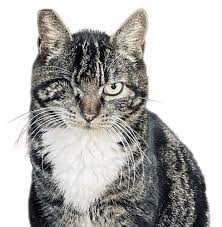
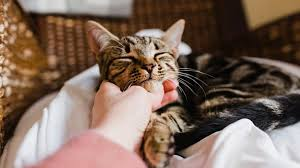

Fluffy

Fluffy is a cute and playful cat.
Blinky
This Cat seems especially cute. Usually a cat that blinks means it is showing trust.
Sleepy

This one is going to sleep. Hopefully it is going to sleep in a comfortable place.
Big Eye

Holy moly does this one have large eyes.
Licky
and last but not least, Licky. Cat have small spines on their tongues, which does agitate
skin.
make sure they dont lick you for too long, as it can really hurt.